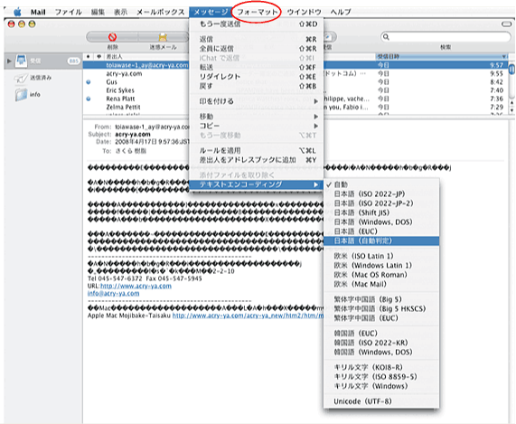

Macintosh標準ソフト Mail をご使用のお客様へ
Macintosh標準ソフト Mail をご使用の場合、テキストエンコーディングを変更しないと弊社からのご連絡メールが文字化けする事があります。その際は、下図のように「テキストエンコーディング」を
日本語（自動判別）
に変更すると解消します。
＊OSのバージョンによってテキストエンコーディングがフォーマットの項目に含まれる事があります

acry-ya.com